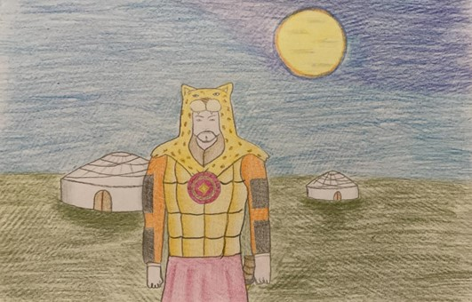

Ben Alp Er Tunga… Ünlü Turan hükümdarı… Perslere karşı verdiğim savaşlarla tanınırım. Pek çok Arap ve Fars kaynağı benden Efrasiyab ya da Efrasiyab et-Türki diye söz eder. Benim hakkımda Firdevsi’nin “Şehname”si, Kaşgarlı Mahmud’un “DivanüLügati’t-Türk”ü, Yusuf Has Hacib’in “Kutadgu Bilig”i, Ebülgazi Bahadır Han’ın “Şecere-i Terakime”si gibi pek çok eserde bilgi bulabilirsiniz. Firdevsi’nin “Şehnamesi” baştan sonra İran-Turan savaşlarını anlatır. Eserde Turan hükümdarı olarak benden Efrasiyab olarak söz edilir. Persler tarafından tuzağa düşürülüp öldürülmem Turan halkları arasında büyük yasa neden olmuştur. Bu nedenledir ki benim için söylenen bir “sagu” (ağıt) Kaşgarlı Mahmud’un 11. yüzyılda yazdığı “Divanü Lügati’t-Türk”ün de bile yer almıştır (“Alp Er Tunga öldi mü/İsiz ajun kaldı mu/Ödlek öçin aldı mu/Emdi yürek yırtılur…). Yusuf Has Hacib’in anlatımıyla dünyanın en iyi beyleri Türk beyleridir. Bu Türk beylerinin en iyisi de benimdir. Bilgili, ferasetli, adaletli, güçlü bir hükümdarım.
